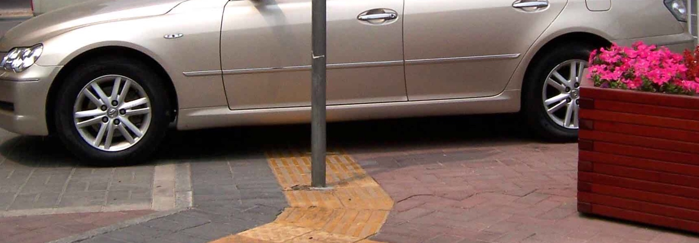
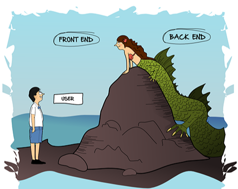

1rem
w3c描述rem为：font size of the root element. (html标签font-size = 1rem)
1 | <p>inherit root element font-size</p> |
以上代码在Chrome浏览器中文字大小是一致的，但是在浏览器设置 字号改成”特大” 后 1rem 设置的字体变得很大、px设置的字体则没有变化，原因是 html 上默认 font-size 被浏览器设置的很大。
rem 和响应式完全没关系
Bootstrap 是用 px 来做屏幕区分
1 | /* breakpoint-sm */ |
ElementUI 是完全使用 px，并没有使用 rem
ElementUI做响应式App非常优秀。
rem 其实是为了用户体验
在欧美国家非常重视用户体验，残障人士的用户体验也是非常重视也有法规来保护弱势群体。
比如：tts(text to speech)是为视力缺陷者提供的文字转语音的服务，浏览器设置中的字号也是为视力缺陷者提供的非常重要的服务。
反用户体验，被妖魔化的 rem
有很多的老文章用 flexible.js 或者 rem.js 等包来完成rem自适应功能，甚至有很多人基于此类思想写了各种各样的奇怪的包。
amfe-flexible 是 Alibaba MFE 团队在2016年 flexible 自适应布局中使用了 rem 单位，并且对 html 标签中的 font-size 做了动态计算。当时这种做法很超前非常不错，但是在2018年1月宣布建议用户使用viewport方案。
但是百度上搜索rem时依然出现很多 flexible.js 方案误导。rem.js 会动态设置 html 标签上的 font-size，会导致系统/浏览器设置的字体大小不会生效，视觉残障人士可用性被扼杀。在则浏览器窗口发生改变时一直在重新计算所有的 rem 单位数值降低性能。
甚至有些团队设置 font-size:10px，只是为了写代码时 px 与 rem 换算方便而已，这岂不是对视力残障人士的一种不负责任？

什么时候应该用 rem？
- 文字应该使用 rem 单位
- 细线、位图使用 px 单位
- 布局请不要持用 rem 或者 px，而是选择 element/bootstrap/… 框架中的 layout
